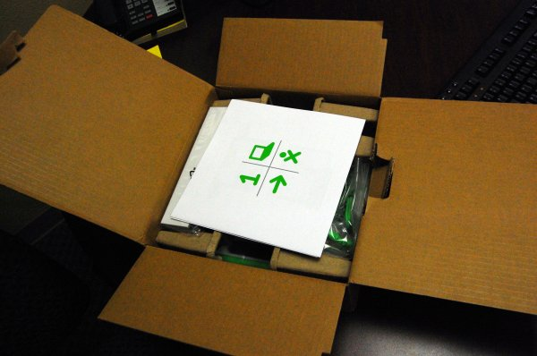

Getting Started¶
Read Me First:
Welcome to XO-land! You are about to start on a wonderful adventure of exploration and learning. The cute little green and white machine in the box is the tool that will enable you to travel the world via the Internet, compose and play music, create works of art, do science experiments, take photos and videos, communicate with friends and family via e-mail, and even learn to do a little computer programming.
But the XO represents a lot more than that. It is a symbol of your commitment to the education of the children of the world. OLPC is not a computer project, it is an education project. We hope you will proudly enjoy using your XO as children around the world do.
Before you get started, consider reading these great tips: http://laptop.org/start
The first thing you need to do is carefully unpack your XO. Save everything! If you don’t, you may accidentally throw away something important. Be sure to save the box, packing materials, and any paperwork that is in the box.

Before you use your XO for the first time, you should fully charge the battery. The Battery section below shows you how to install the battery and connect the charger.
While you wait for it to charge, read through the rest of this guide and see what you can do!
| author: | © Caryl Bigenho 2008 adam hyde 2008 Anne Gentle 2008 Charles McCarthy 2008 A Holt 2008 Lisa Lewis 2008 Tom Boyle 2008 G Hunt 2012 |
|---|